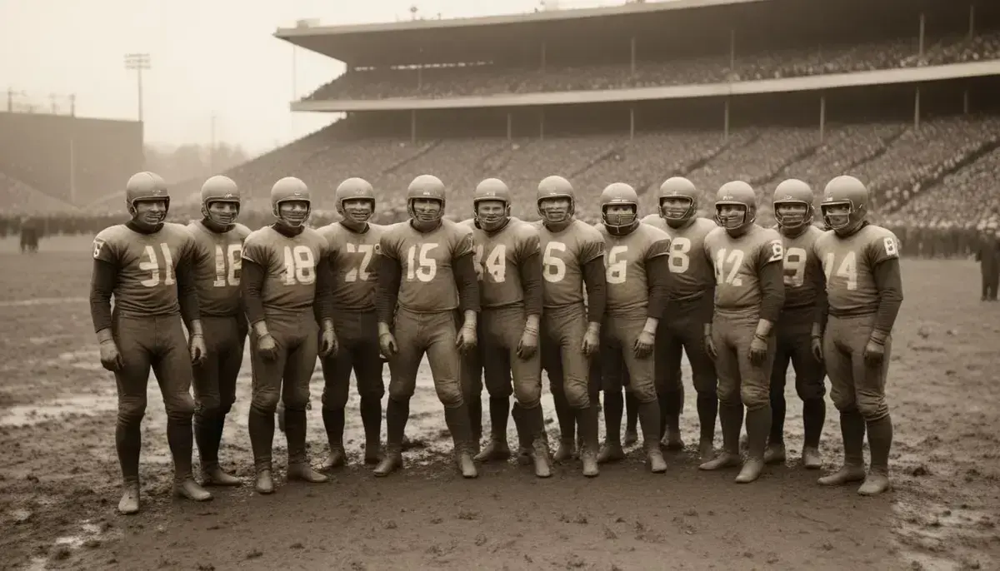
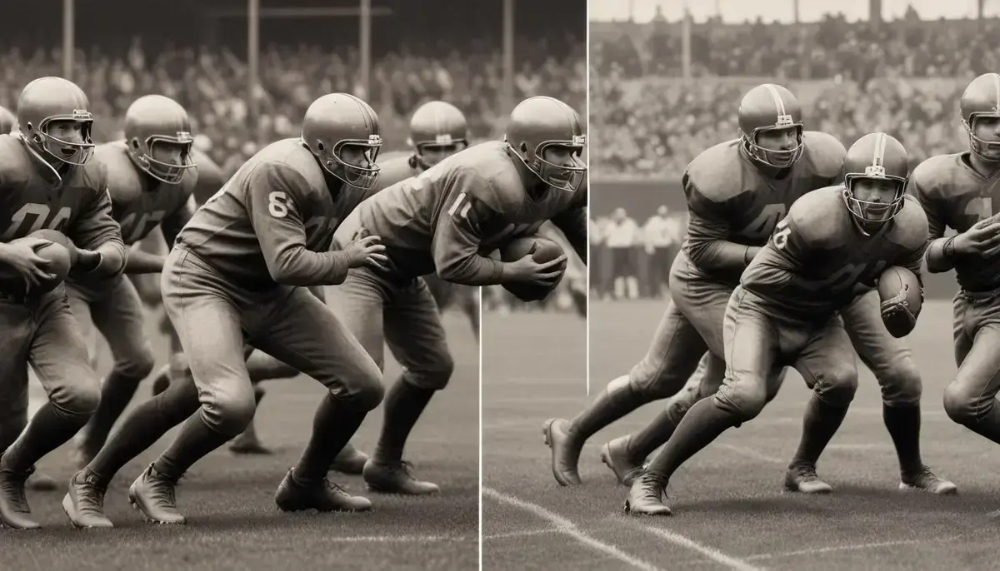
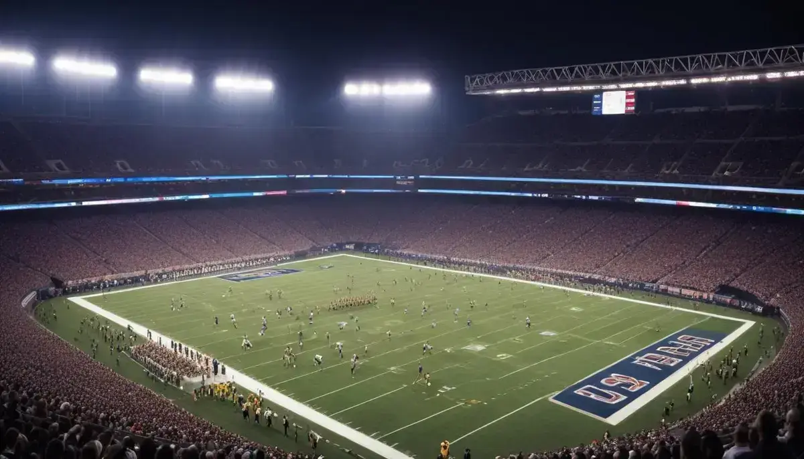

As regras do futebol americano

O campo da NFL é retangular, com 100 jardas de comprimento e 53,5 jardas de largura, com duas endzones de 10 jardas em cada extremidade, onde se marcam os touchdowns. As linhas são marcadas a cada jarda, com múltiplos de 5 e 10 destacados, e cada endzone possui um goal post em formato de Y para chutes de field goal e extra point

Em 1876, Walter Camp, conhecido como o ‘pai do futebol americano’, introduziu mudanças cruciais, como a linha de scrimmage e o sistema de downs. Essas inovações transformaram o jogo em algo mais próximo do que conhecemos hoje.

Um jogo é dividido em quatro quartos de 15 minutos cada, com um intervalo de 12 minutos entre o segundo e terceiro quartos. O relógio para em situações específicas, como passes incompletos, saídas de campo, faltas ou tempos técnicos. Em caso de empate, há prorrogação para definir o vencedor
Cada time possui 53 jogadores no elenco ativo, mas apenas 11 em campo por vez. Os times são divididos em três unidades: Ataque: liderado pelo quarterback, inclui linemen, wide receivers, running backs e tight ends, com objetivo de marcar pontos. Defesa: formada por defensive ends, tackles, linebackers, safeties e cornerbacks, com objetivo de impedir o avanço do adversário. Especialistas: responsáveis por punts, field goals e retornos de chutes.
O time com a bola tem quatro tentativas (downs) para avançar pelo menos 10 jardas. Se conseguir, ganha um novo conjunto de quatro descidas; caso contrário, a posse passa ao adversário. A bola é sempre colocada na linha de scrimmage, e o quarterback pode lançar, entregar ou correr com a bola. Se o quarterback for derrubado atrás da linha de scrimmage, ocorre um sack
Pontuação Touchdown (TD): 6 pontos, seguido de uma jogada extra (1 ponto chutando ou 2 pontos correndo ou passando da linha de 2 jardas). Field Goal: 3 pontos, quando o kicker acerta o gol da endzone adversária. Extra Point: 1 ponto, chute após touchdown. Two-Point Conversion: 2 pontos, tentativa de touchdown curto após TD.
A NFL possui 32 times, divididos em duas conferências (Americana e Nacional), cada uma com quatro divisões de quatro times. Após a temporada regular, os campeões de divisão e os melhores segundos colocados disputam os playoffs, culminando no Super Bowl, que decide o campeão da liga